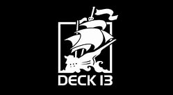

Présentation de Focus Entertainment
Informations générales
Focus Entertainement est une société anonyme française.
Il s’agit d’une entreprise commerciale spécialisée dans la création, la production et l’édition de contenus multimédias et logiciels, en particulier des jeux vidéos, et de licences d’utilisation.
Elle propose également des services tels que la création de divertissements interactifs, un support technique et l’organisation d’évènements promotionnels.
Son siège social se situe au 11 rue de Cambrai 75019, Paris, et elle possède des bureaux et des studios de développement en France et dans plusieurs pays à travers le monde, notamment en Allemagne, aux Pays-Bas, en Inde ou au Royaume-Uni.
Historique : Games Factory Publishing
Focus Entertainement a été créée le 4 avril 1996 sous le nom originel « Games Factory Publishing ».
Elle a tout tout d’abord édité et distribué les logiciels de musique e-Jay, et s’est spécialisée en 2000 dans la distribution puis dans l’édition de jeux vidéos sur le marché français et a travaillé en collaboration avec des studios de jeux vidéos tels que Cyanide Studio, Passtech Games ou Eugen Systems.
Historique : Focus Home Interactive
Le 3 juillet 2001, Games Factory Publishing change de nom pour devenir Focus Home Interactive.
L’entreprise a pu développer ses activités pour se spécialiser davantage dans l’édition de jeux vidéos.
Elle est ainsi devenue beaucoup plus active, publiant en moyenne 8 jeux par an.
Par la suite, l’entreprise commencé à racheter d’autres studios de jeux, tels que Deck13 Interactive en 2020, pour développer encore plus ses activités, notamment au niveau international.
Alors qu’elle ne proposait que des jeux pour Windows depuis sa création, elle a commencé à également proposer des jeux pour Nitendo DS à partir de 2008 avec Last King of Africa, puis des jeux pour plus de plateformes diversifiées et même multiplateformes plus tard dans la même année avec Pro Cycling Manager Saison 2008, disponible pour Windows et Playstation portable.
Il est à noter que pendant quelques temps, les jeux proposés sont restés majoritairement disponibles sur Windows et Nintendo DS, et que Focus Home Interactive n’a commencé à proposer régulièrement des jeux pour autres plateformes qu’à partir de fin 2009.
Par la suite, l’entreprise commencé à racheter d’autres studios de jeux, tels que Deck13 Interactive en 2020, pour développer encore plus ses activités, notamment au niveau international.

Historique : Focus Entertainment
Le 6 septembre 2021, Focus Home Interactive change de nom et de logo. L’entreprise devient Focus Entertainement. Elle continue à proposer de nombreux nouveaux jeux et à racheter des studios.
Aujourd’hui, Focus Entertainement possède 6 studios internes : Deck13 Interactive, un studio allemand ; Streum On Studio, un studio français ; DotEmu, un studio français ; Blackmil Games, un studio néerlandais ; The Arcade Crew, un studio indien ; Dovetail Games, un studio britannique et Leikir Studio, un autre studio français.
Elle est donc active au niveau international et peut également travailler en collaboration avec d’autres studios à travers le monde, notamment au Canada, en Pologne ou aux Etats-Unis.
L’entreprise est aujourd’hui devenue une société très connue dans le domaine du jeu vidéo grâce à tous les jeux qu’elle a publié par le passé.